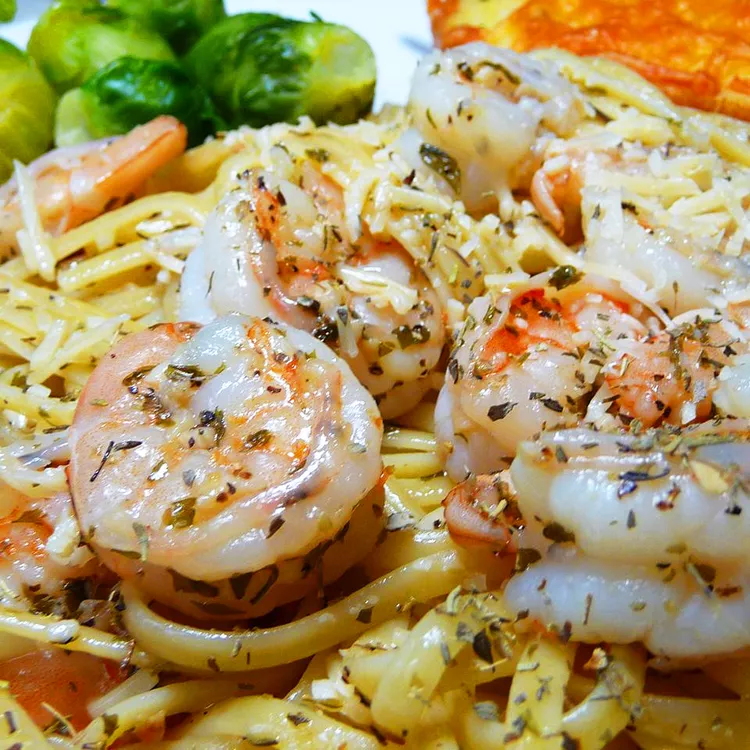

Linguine

Description
This shrimp linguine is a dazzlingly simple and delicious recipe. It is an elegant dish to serve to drop-in dinner guests.
Ingredients
- 1 pound uncooked linguine
- 1 tablespoon butter
- 3 tablespoons white wine
- 3 cloves garlic, minced
- 2 teaspoons grated Parmesan cheese, plus more for serving
- 1 teaspoon chopped fresh parsley, plus more for garnish
- 1 pound medium shrimp, peeled and deveined
Steps
- Bring a large pot of lightly salted water to a boil. Cook linguine at a boil until tender yet firm to the bite, about 11 minutes. Drain.
- Melt butter in a medium saucepan over medium-low heat. Add wine, garlic, Parmesan cheese, and parsley. Season with salt and pepper. Simmer, stirring frequently, over low heat for 3 to 5 minutes.
- Increase heat to medium-high and add shrimp to the saucepan; cook until shrimp begins to turn pink, 3 to 4 minutes. Do not overcook.
- Divide pasta into 8 bowls. Spoon shrimp with sauce on top. Garnish with Parmesan cheese and parsley.